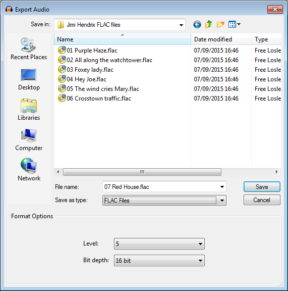

FLAC Export Options
FLAC is a size-compressed but lossless open source audio format. The files it produces are about half as large as the uncompressed WAV or AIFF formats, but larger than compressed, lossy formats.
- Accessed by: then choosing FLAC Files from the Save as type dropdown menu.
- 
- Also accessed by: then choosing FLAC Files from the Save as type dropdown menu. In this case the options dialog will appear in the center of the Export Multiple dialog.
FLAC Export Setup
- Level: The amount of file size compression used to losslessly pack the audio data, similar to compression levels in ZIP files. The level settings range from 0 to 8. Level 0 is optimized to encode as fast as possible. Level 8 is optimized to pack as efficiently as possible, so produces slightly smaller files than level 0 at the expense of taking longer to encode. Files encoded at level 8 are rarely more than a few percent smaller than those encoded at level 0, but can take three or four times longer to encode.
- Bit depth: Choose from 16-bit (default) or 24-bit (approximately 50% larger file size).